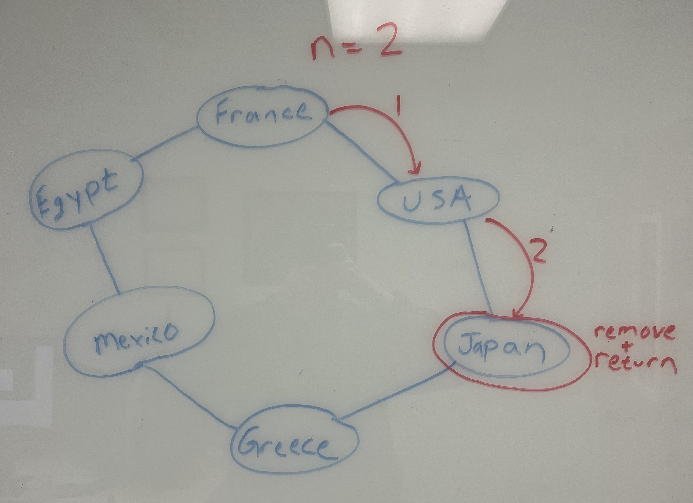
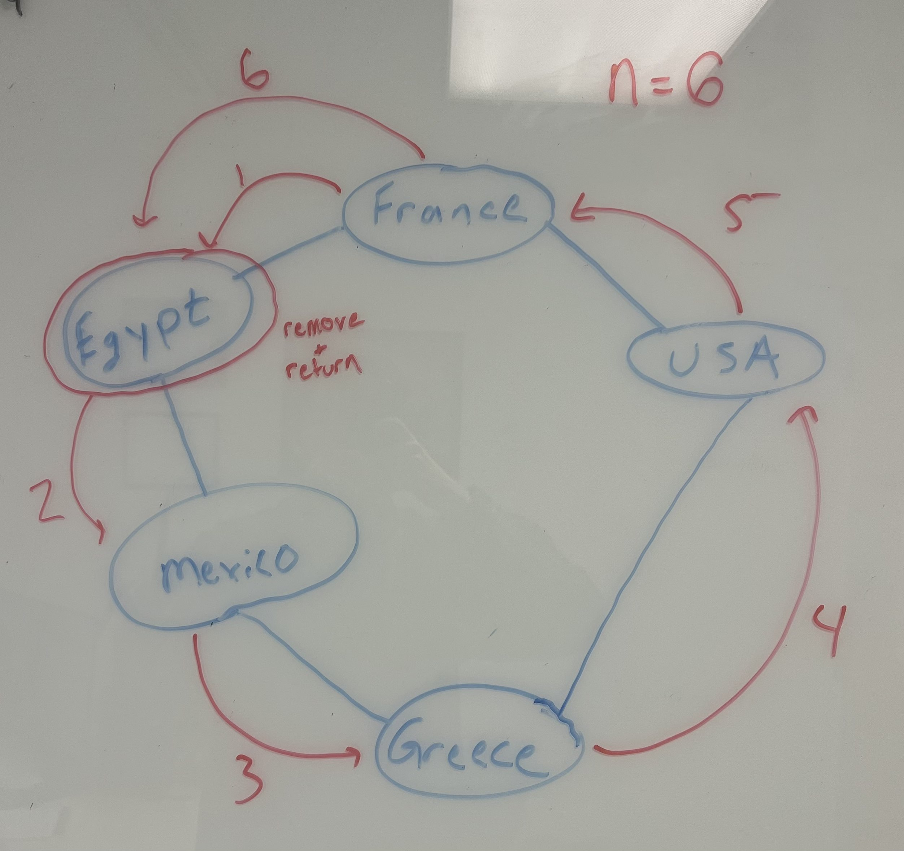

Lab 6: Circular Linked Lists
Due Date and Submission Requirements
- Due Date: Thursday, October 5th at 11:59 p.m.
- Partner Information: This is an individual assignment. You are allowed to collaborate with other students, but each student must submit their individual, independent solution.
- Submission Instructions: Upload your solutions (.java file), entitled Node.java, and CircularLinkedList.java to the BrightSpace(D2L) Lab 5 Dropbox.
The goal of this lab is:
- Gain experience using Circular Linked Lists
- Write methods that manipulate data inside a Circular LinkedList
Directions
You will be writing a Circular Linked List where each Node represents a country.
First, define the Node class. Each Node (country) will have a name. Remember that each Node must also keep track of the node that comes next, and the node that comes before it.
Then, download Lab6Demo.java, and supply the missing functions inside the CircularLinkedList class.
In the CircularLinkedList class, you must write the following methods
- addAfterTail(Node newNode)- this method adds a new node after the tail node. Because this is a circular linked list, this node will also need to be linked to the head node.
- printCircularLinkedList(boolean isReversed)- This method prints out all the nodes in the circular linked list. This method takes in a boolean (true or false) as an argument. If the boolean is false, it prints out the node in "normal" order (head --> tail). If the boolean is true, it prints out the node in reverse order (tail --> head).
- selectRandomCountry(boolean isReversed)- This method generates a random integer N between 0 and 10 (inclusive), and then travels N spots and returns the node it lands on. This method takes in a boolean (true or false) as an argument. If this boolean is false, the linked list will travel the list in "normal" order (start from the head, and keep going to next nodes). If this boolean is true, the linked list will travel N spots in "reverse" order (start from the head, and keep going to previous nodes). This method should return the node that it selected. You are not required to handle the case of the same node being selected twice.
- remove(Node removeNode)- This method takes in a node to be removed as an argument, and removes it from the circular linked list. If this node so happens to be either the head or tail, you need to remember to adjust and assign a new head/tail node.
Rules
You are NOT allowed to import java.util.LinkedList;
Starting Code
Required Output
When your program is run, your output should look exactlythe same as seen in this screenshot .
You might be confused regarding why Egypt or Japan was selected to remove. Here is a visualization of the linked list, and how it was determined which node was removed:


Grading (10 points)
- 3 pts- addAfterTail() correctly adds a new node after the tail
- 2 pts- printCircularLinkedList() prints out the nodes of a linked list in normal order and and reverse order
- 2 pts- selectRandomCountry() correctly selects and returns a random node from the linked list in normal order and reverse order
- 3 pts- remove() correctly removes a node from the linked list
Deductions
-10 points if you dont use a Linked List